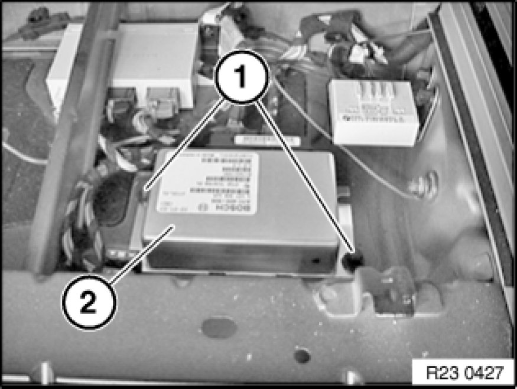

Control Module: Service and Repair
27 10 700 - Removing and installing / replacing control unit for transfer case

Important!
Read and comply with notes on protection against electrostatic damage (ESD protection) Replacing Front Trim for Luggage Compartment Floor.
After installation:
- After replacement, the "Repair" service function must be carried out with GT1.
- Replacement only: Carry out programming/coding
In vehicles before 03/05 the old diagnosis algorithm and in vehicles after 03/05 the new diagnosis algorithm must always be activated by way of coding!

Necessary preliminary tasks:
- Remove front panel for luggage compartment floor 61 35 ... Notes on ESD Protection (Electro Static Discharge).

Unscrew nuts (1).
Unfasten plug connection and disconnect.
Remove control unit (2).